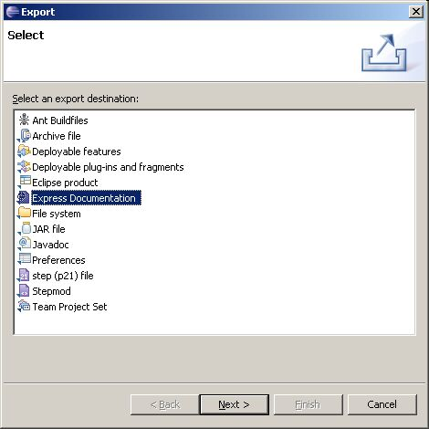
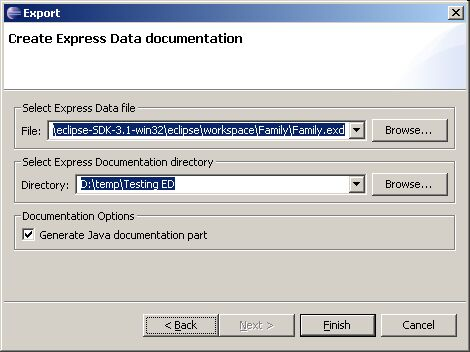
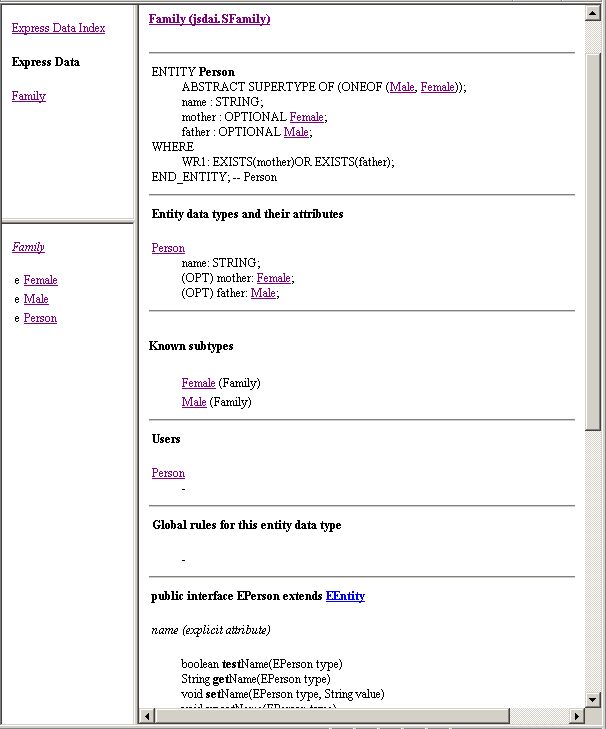

Figure 2. Export wizard window
to select Express Documentation item
- The following wizard dialog window appears (see Figure 3).
- You can select another express data file from your file system by
using Browse button in the Select Express Data file layout.
- Choose the output directory by using Browse button in the Select Express Documentation directory
layout.
- Turn the Generate Java
documentation part option ON/OFF.
- Click Finish button.

Figure 3. Create Express Data
documentation dialog window
- The particular hierarchy of files and folders are located in the
indicated directory. Double click on the index.html
file to view the documentation (see Figure 4).

Figure 4. Generated Express
Data documentation with Java documentation part